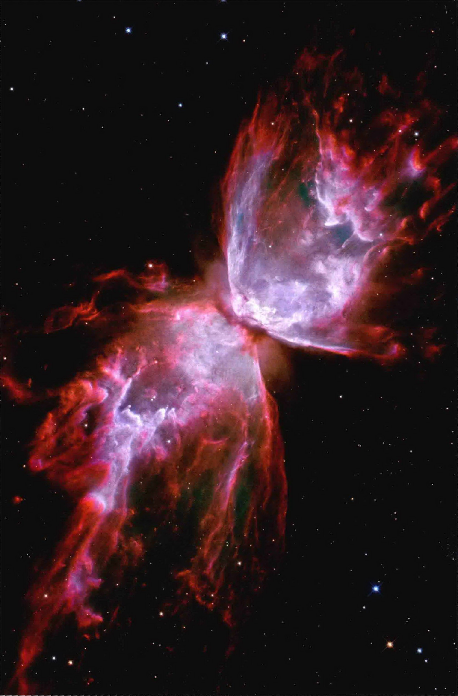
蝴蝶星云 (NGC 6302) 的壮丽景象。
第20章 恒星演化
恒星的生和死
到达主序阶段以后，新诞生恒星的外观在其90%以上的寿命内不会有太大变化。然而，在主序期的末段，随着恒星的燃料被耗尽并开始死亡，它的性质会再次发生巨大的改变。老去的恒星沿着远离主序的演化轨迹移动，直到结束它们的生命。在本章和接下来的两章里，我们将讨论恒星在燃烧的主序阶段和主序后的演化。
我们会发现，恒星的最终命运主要取决于其本身的质量——尽管和其他恒星的相互作用也有着决定性的作用——事实上，恒星的最后归属可能会很奇特。通过不断地将理论计算结果与恒星及所有类型的双星的细致观测结果进行比较，天文学家已经重铸了恒星演化理论，使之成为理解宇宙的精密而强大的工具。
学习目标
本章的学习将使你能够：
- 说明为什么恒星会离开主序演化。
- 概括当类太阳恒星从主序演化到巨星支时会发生什么。
- 说明太阳最终如何在其核心发生氦的聚变，并描述当发生这样的聚变时会发生什么。
- 总结典型的低质量恒星在死亡时所处的状态，并说明产生的遗迹是什么。
- 对比大质量恒星和低质量恒星的演化史。
- 列出有助于验证恒星演化理论的观测现象。
- 说明双星系统中恒星的演化与单一恒星的演化有何不同。
左图：这幅图片像宇宙沙漏或仙宫蝴蝶般令人惊叹，它捕获到了一颗距离大约为3800光年的、垂死的恒星所释放出的炽热气体。NGC 6302或通俗名为小虫星云，是被称为行星状星云的复杂天体——随着一颗年老的恒星进入死亡阶段，它的外层脱落并弥散到光年尺度的空间内。它的特殊形状源于一条尘埃带（中心的暗带）掩盖了正在死亡的恒星，并且部分地挡住了这个旋转的大锅向外抛出的气体。[空间望远镜科学研究所 (STScI)]
20.1 离开主序
大多数恒星在主序上度过其一生的大部分时间。例如，像太阳这样的恒星，在经历了几千万年的形成阶段后（第8章中的第1~6阶段），开始处于或接近主序（第7阶段），在它变成其他天体之前，有100亿年的时间。🔗(8.2节) 这里的“其他天体”就是本章的主题。
观测恒星一生
从来没有人曾亲眼见证过恒星从诞生到死亡的完整演化过程。恒星会花很长的时间——百万年、数十亿年，甚至是数万亿年——不断演化。🔗(6.8节、8.2节) 然而，在不到一个世纪的时间里，天文学家构建起了全面的恒星演化理论，也是所有天文学中被很好地验证过的理论之一。我们为何如此自信地谈论过去数十亿年里发生的事情，以及未来几十亿年里将会发生什么呢？答案是我们可以观测宇宙中数十亿颗恒星，这足以让我们看到恒星演化过程的每一个阶段，并使得我们能够验证和改进我们的理论观点。🔗(1.2节) 正如可以通过研究大城市里所有居民的快照来拼凑出人类生命周期的图景一样，我们亦可以通过研究夜空所见的无数恒星来构建恒星演化的图景。
注意，天文学家在这里使用的“演化”(evolution)一词，指的是一颗单独的恒星在其一生内的变化。对比这一术语在生物学中的应用，它指的是植物或动物种群在很多代里的特征变化。事实上，正如我们在第10章里看到的，恒星内的聚变反应使得星际介质里的成分（也是每一代新恒星里的成分）随着时间的推移而缓慢地发生变化，恒星星族的演化有着后者所指的“生物学”意义。然而，按天文的说法，“恒星演化”总是指在恒星生命单次周期内的变化。
结构变化
在主序阶段，恒星在其核心中缓慢地将氢聚变成氦。这一核聚变过程被称为核心氢燃烧。在第5章里，我们看到了质子-质子聚变链是如何为太阳提供能量的。🔗(5.6节) 顺便说一下，这是天文学家使用相当常见的词语来表述完全不同意义的一个例子。对天文学家来说，“燃烧”总是指恒星核心的核聚变，而不是我们日常对话里通常认为的化学反应（如木材或汽油在空气中的燃烧）。化学燃烧并不能直接作用于原子核。
如之前第5章里所述（见图5.4），一颗主序星处于流体静力学平衡状态，向外的压力正好抵消掉向内的引力。🔗(5.2节) 这是引力和压力之间的稳定平衡，任何一个发生小小变化总是会引起另一个用微小变化来补偿。在学习后面介绍的恒星演化的不同阶段时，你应该牢记这一点。用这样的简单描述可以理解恒星的许多复杂行为。然而，当核心的氢最终被消耗殆尽时，恒星的内部平衡会发生转变，恒星的内部结构和外观都会开始迅速改变，恒星因此离开主序。
一旦一颗恒星开始离开主序，那么它的寿命就已经屈指可数了。恒星演化的主序后阶段——恒星生命的终结——关键取决于恒星的质量。作为经验的法则，我们可以说，低质量恒星是自然死亡的，而大质量恒星则是暴毙的。这两种极其不同的结果之间的分界线大约是8倍太阳质量。本章里，我们将质量超过8倍太阳质量的恒星称为“大质量”恒星。“大质量”和“低质量”（即小于8倍太阳质量）两种分类的恒星有着本质性的变化，我们随后将指出一些不同点。
我们将专注于几种有代表性的恒星演化序列，而不会在太多的细节上花费功夫。我们首先考虑像太阳这样的质量相当小的恒星的演化。接下来的几节将描述的是，太阳从现在起到其终结聚变反应的50亿年时间里会经历的阶段。阶段的编号紧接着从第8章开始的编号。实际上，这里讨论的大多数定性的特征适用于任何低质量恒星，尽管准确的数字变化相当大。稍后，我们将把我们的讨论扩展到所有恒星，包括大质量和小质量的。
天文学家如何能够“看到”恒星随时间的演化？
20.2 类太阳恒星的演化
像太阳这样的主序星的表面偶尔会爆发耀斑和黑子，但在大多数情况下，恒星的性质不会有任何突然的、大规模的改变。它的平均表面温度保持相对稳定，而它的光度随时间会缓慢地增加。太阳的表面温度与其在50亿年前形成时的温度大致相同，尽管它比那时要亮约30%。
这种状况不会永远持续下去，恒星的内部结构最终会发生翻天覆地的变化。当恒星核心的氢稳定地燃烧了大约100亿年以后，类太阳恒星的燃料开始耗尽。这有点像自动巡航的汽车轻松地在高速公路上以恒定的速度行进许多小时后，只有当汽油表指向零点，发动机才会突然抖动并发出噼啪声。然而，与汽车不同的是，恒星的燃料补给可不容易。
第8阶段：亚巨星支
伴随着核聚变，恒星的内部成分也随着氢燃料的耗尽而发生变化。图20.1说明了随着恒星年龄的增加，氦的丰度增加，而恒星内核中的氢丰度对应减小。这里展示了三个例子：(a) 最初核心的化学成分，(b) 50亿年后的成分和 (c) 100亿年后的成分。(b) 近似代表了太阳当前的状态。
恒星中心的温度最高，燃烧也最快，氦含量增加得最为迅速；内核边缘的氦含量也在增加，但要慢得多，因为那里的燃烧速度要慢一些。恒星内部富含氦的区域越来越大，随着恒星继续发光、氢越来越缺乏。最终，在恒星到达主序大约100亿年后，中心的氢被耗尽，那里的核反应停滞，主要的燃烧区域移动到内核的较外层。一个不燃烧的纯氦内核开始增大，如图20.1(c)所示。

▲ 图20.1 太阳的成分变化
类太阳恒星成分的理论预估变化，展示了恒星从诞生到死亡（从上到下），氢（黄色）和氦（蓝色）的丰度的变化。核反应速率随着时间增快，这些变化都会加快核反应速度。
没有了核反应的支撑，氦内核中向外的气体压力会变弱，但向内的引力可不会变弱。一旦向外的推力相比引力有所松懈——哪怕是一点点——恒星结构的改变都会变得不可阻挡。随着氢的消耗，内核开始收缩。当中心所有的氢消耗殆尽时，收缩的过程就会加速。
如果有更多的能量产生，那么核心可能会重获平衡。例如，如果内核中的氦也开始聚合成某种更重的元素，那么燃烧氦也能产生能量，所需的气体压力就将恢复。但中心的氦不能燃烧——至少现在还不能燃烧。尽管温度很高，但核心仍然太冷，不能使氦聚合成更重的元素。
回忆第5章，氢聚变成氦所需的最低温度大约为 $10^7\text{K}$。只有在此温度以上，氢原子核（即质子）碰撞的速度才足够大，能够克服原子核之间的电磁斥力。🔗(5.6节) 由于每个氦原子核有两个质子，带的正电荷更大，所以它们的电磁斥力更大，需要更高的温度才能引发氦的聚变反应——至少是 $10^8\text{K}$。因此，温度为 $10^7\text{K}$ 的由氦组成的内核不可能通过聚变产生能量。
氦核的收缩释放出引力势能，使中心温度升高并加热核心上覆盖的燃烧层。更高的温度——现在超过了 $10^7\text{K}$（但仍然在 $10^8\text{K}$ 以下）——使氢原子核的聚变比之前更加迅速。
图20.2描述了这样的情况，在围绕恒星中心的由氦“灰烬”构成的不燃烧内核的壳层中，氢以惊世骇俗的速度燃烧着。这一阶段被称为氢壳层燃烧阶段。氢壳层生成能量的速度比原来主序星燃烧的氢核更快，壳层产生的能量持续不断地增加，同时氦核不断地向内收缩。令人不解的是，恒星中心核燃烧的终止带来的却是恒星变得更亮。
表20.1小结了太阳质量大小的恒星演化的关键阶段。该表是表8.1的延续，只是密度单位已经从每立方米的粒子数变成了更方便的 $\text{kg/m}^3$，并且大小用半径来表示，而不是直径。“阶段”那一列的数字指的是插入图中所示和文中所讨论的演化阶段。
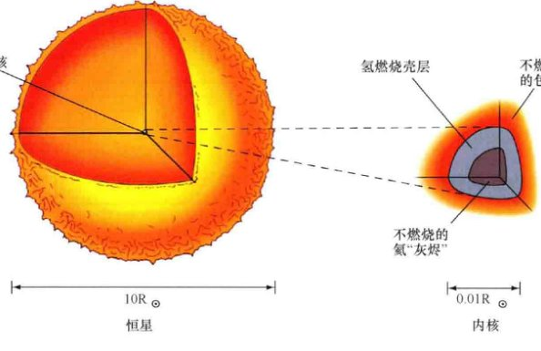
▲ 图20.2 氢壳层燃烧
随着恒星的内核将越来越多的氢聚变成氦，在围绕不燃烧的氦“灰烬”的壳层中，氢的燃烧更加猛烈。当恒星到达巨星支的底部时（大约是表20.1中的第8阶段），它的核心的直径已经缩减为几万千米，恒星光球层是恒星原始尺寸的10倍。
经过漫长的主序阶段后，恒星的温度和光度再次发生变化，我们可以借由赫罗图上的恒星演化轨迹来跟踪这些变化。🔗(8.2节) 图20.3显示了恒星开始离开主序的路径，如第8阶段所示。恒星在图上首先向右演化，它的表面温度降低而光度略有增加。在第8阶段，恒星的半径增加到约为太阳半径的三倍。该阶段的恒星被称为亚巨星。图中从主序上的位置（第7阶段）到第8阶段的大致水平路径被称为亚巨星支。
第9阶段：红巨星支
现在，我们的老年恒星远离了主序，不再处于稳定的平衡状态。氦核不稳定，并且在收缩。核心的其他部分也是不稳定的，氢以持续加快的速度聚变成氦。氢燃烧增强而产生的气体压力使恒星不燃烧的外层半径增大。没有什么引力可以阻止这种必然的改变。就在核心不断收缩和加热时，覆盖的外层却在不断地扩张和冷却。恒星在这样的变化中成为一颗红巨星。从正常的主序星转变为更老的红巨星大约需要1亿年。
到第9阶段，随着恒星表面温度的降低，恒星的多数表面对于从内而来的辐射是不透明的。除了这一点以外，对流把核心的大量能量带到了表面。对流的结果之一是，在第8阶段和第9阶段之间，恒星的表面温度几乎保持为常数。恒星在这两个阶段之间几乎垂直的路径被称为赫罗图上的红巨星支。到第9阶段，不断收缩的内核中氢壳层的燃烧是如此凶猛，以至于巨星的光度是太阳光度的数百倍。恒星的半径此时约为100个太阳半径。
表20.1 类太阳恒星的演化
| 阶段 |
到下一阶段的
大致时间/年 |
中心温度
/$10^6$ K |
表面温度/K |
中心密度
/($\text{kg/m}^3$) |
半径
(km / 太阳半径) |
类型 |
| 7 | $10^{10}$ | 15 | 6000 | $10^5$ | $7 \times 10^5$ / 1 | 主序星 |
| 8 | $10^8$ | 50 | 4000 | $10^7$ | $2 \times 10^6$ / 3 | 亚巨星支 |
| 9 | $10^5$ | 100 | 4000 | $10^8$ | $7 \times 10^7$ / 100 | 氦闪 |
| 10 | $5 \times 10^7$ | 200 | 5000 | $10^7$ | $7 \times 10^6$ / 10 | 水平支 |
| 11 | $10^4$ | 250 | 4000 | $10^8$ | $4 \times 10^8$ / 500 | 渐近巨星支 |
| 12 | $10^5$ | 300 | 100 000 | $10^{10}$ | $10^4$ / 0.01 | 碳核 |
| - | - | - | 3000 | $10^{-17}$ | $7 \times 10^8$ / 1000 | 行星状星云* |
| 13 | - | 100 | 50 000 | $10^{10}$ | $10^4$ / 0.01 | 白矮星 |
| 14 | - | 接近于0 | 接近于0 | $10^{10}$ | $10^4$ / 0.01 | 黑矮星 |
| * 数值采用的是包层的数值。 |

▲ 图20.3 赫罗图中的红巨星
随着恒星氦内核的收缩和外部包层的膨胀，恒星开始离开主序（第7阶段）。在第8阶段，恒星正好处在变成红巨星的过程中。随着恒星沿着红巨星支上升到第9阶段，它不断变亮并变大。正如第8章所提到的，对角的虚线是等半径线，可以让我们估量恒星大小的变化。
红巨星很大——大约有水星轨道那么大。相反，氦核却出乎意料的小——大约只有整个恒星的千分之一，使得其内核的大小只有地球的几倍大。核中心的密度很高，不断收缩的红巨星内核将气体氦压缩至约 $10^8\text{kg/m}^3$，巨星最外层的值为 $10^{-3}\text{kg/m}^3$。相比之下，地球的平均密度仅为 $5000\text{kg/m}^3$，而现在太阳内核的密度为 $150 000\text{kg/m}^3$。整个恒星大约25%的质量被压缩在行星大小的核中。
处于红巨星阶段的低质量恒星的一个常见例子是KIII型巨星的大角星（见图6.15），它是天空中最亮的恒星之一。它的质量大约是太阳质量的1.5倍。大角星目前处于氢壳层燃烧阶段，并在沿着红巨星支上升，它的半径是太阳的21倍左右，释放出的能量约是太阳的160倍，辐射大多位于光谱的红外范围内。
第10阶段：氦聚变
红巨星的不稳定状态应该会继续，内核最终会坍缩，恒星的其他部分会缓慢地进入太空。红巨星内部的斥力和压力确实会将它撕裂。事实上，对于质量小于四分之一太阳质量的恒星，这正是最终会发生的事情（在几千亿年内——见20.3节）。
然而，对于类太阳恒星，同时发生的收缩和扩张不会无限期地持续下去。在一颗与太阳质量相当的恒星离开主序后几亿年，别的事件发生了——核心的氦开始燃烧。当中心的密度上升到约 $10^8\text{kg/m}^3$（第9阶段），温度达到氦聚变成碳所需的 $10^8\text{K}$，恒星中心的核聚变被重新点燃。
将氦转化为碳的核反应有两步。首先，两个氦原子核聚合在一起形成铍8 ($^8\text{Be}$)，这是一种非常不稳定的同位素，通常会在大约 $10^{-12}\text{s}$ 内衰变成两个氦核。然而，在红巨星内核的高密度条件下，铍8核有可能在衰变发生前就遇到其他的氦核，并与氦原子核聚合形成碳12 ($^{12}\text{C}$)。这就是氦燃烧反应的第二步。在某种程度上，正是由于铍8核（有四个质子）与氦4（两个质子）之间的静电斥力，因此温度必须要达到 $10^8\text{K}$ 才能发生这一步。
采用元素符号，我们可以将这一阶段的恒星核聚变表示如下：
$^4\text{He} + ^4\text{He} \rightarrow ^8\text{Be} + \text{能量}$
$^8\text{Be} + ^4\text{He} \rightarrow ^{12}\text{C} + \text{能量}$
氦4核通常被称为阿尔法粒子。此词可以追溯到核物理研究的早期，那时并不了解这种从多种放射性材料释放出来的粒子的本质。由于从氦4变成碳12需要三个阿尔法粒子，因此，上述反应通常被称为三阿尔法过程。
氦闪终止了巨星在赫罗图中红巨星支上的上升。然而，尽管内核中的氦被猛烈点燃了，但氦闪并不会增加恒星的光度。相反，氦闪时释放的能量使内核膨胀并冷却，最终导致能量输出的减少。在赫罗图上，恒星从第9阶段跳到第10阶段，处于稳定状态，内核中的氦在稳定地燃烧。如图20.4所示，恒星的表面温度现在比其在红巨星支上高，但其光度远远低于氦闪时的光度。恒星性质的这种调整发生的非常迅速——大约在100 000年内。

▲ 图20.4 水平支
随着恒星沿红巨星支上升，它的光度发生了很大的变化，并以氦闪结束上升。然后恒星下降至水平支，在第10阶段中处于另一种平衡状态。
在第10阶段，恒星的内核在稳定地燃烧，外部是一个氢聚变的壳层。恒星处在赫罗图中一个明确的区域内，被称为水平支，在重新开始在赫罗图上的环游之前，核心燃烧氦的恒星在这里会保持一段时间。恒星在该区域内的具体位置主要取决于它的质量——并不是恒星的原始质量，而是其上升到红巨星支之后剩下的质量。这两种质量是不同的，因为在红巨星阶段，强烈的恒星风从恒星表面喷出了大量的物质。在此期间可能有高达20%~30%的原始恒星质量的逃逸。如此巧合的是，在这一阶段，质量越大的恒星的表面温度越低，但在氦闪之后，所有恒星的光度几乎相同。因此，10阶段内的恒星在赫罗图上趋于沿水平线分布，质量较大的恒星位于右边，而质量较小的恒星位于左边。
第11阶段：回到巨星支
恒星氦核中的核反应被点燃了，但却不能持续太久。无论如何，内核中的氦会被快速地消耗，死亡中的恒星会再次上升回到巨星支。
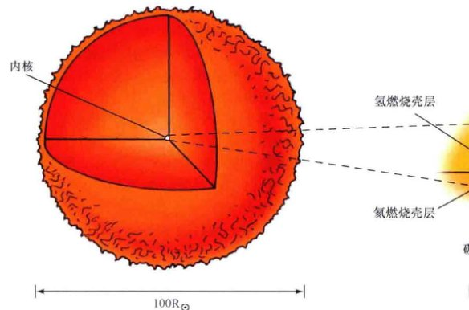
▲ 图20.5 氦壳层燃烧
在氦燃烧开始（第9阶段）之后几百万年里，碳灰烬在恒星内核内部不断累积。在碳核之上，氢和氦仍然在同心壳层中燃烧。
三阿尔法氦粒子到碳的聚变反应——如同之前的质子-质子和碳氮氧循环的氢聚变成氦的反应一样——反应速度随着温度迅速增加。在处于水平支的恒星内核中产生的高温下，氦燃料不会维持太长时间——从初次氦闪算起，不到几千万年的时间。
随着氦聚变成碳，新的富碳的内核开始形成，表象类似于早前氦核形成时所发生的那样。恒星中心的氦开始枯竭，那里的聚变最终会停止。不燃烧的碳的内核尺寸会收缩——即便是在氦聚变作用下，碳的质量在增加——随着引力向内牵引，内核被加热，导致内核外部覆盖的氢和氦燃烧的速率增加。如图20.5所示，恒星现在有一个致密的碳内核，被燃烧的氦壳层包裹着，而外面又被燃烧的氢壳层包裹着。恒星的外部包层——围绕内核的不燃烧的层——膨胀着，就像之前第一次红巨星阶段时那样。在恒星到达图20.6所示的第11阶段时，它已经第二次变成肿胀的红巨星了。
为了将第二次沿巨星支的上升与第一次区分开来，恒星第11阶段上升的轨迹通常被称为渐近巨星支。这次，碳内核周围壳层中燃烧的速率要更加猛烈，恒星的半径和光度增加得比第一次上升至氦闪时达到的数值要高得多。碳内核的质量随着外面氦燃烧壳层中产生的碳越来越多而增加，但其半径却不断收缩，而氢燃烧和氦燃烧壳层的温度和光度却越来越高。

▲ 图20.6 重新上升到巨星支
碳内核的恒星重新进入赫罗图上的巨星区域——这次的轨迹被称为渐近巨星支（第11阶段）——由于相同的原因，恒星在那里进行第一回合的演化：中心缺乏核聚变，造成内核收缩，覆盖的外层膨胀。
对太阳质量大小的恒星来说，中心的温度不会达到6亿开尔文，这是引发下一阶段核反应所需的温度。红巨星离它一生核燃烧的终点已经非常接近了。
为什么随着恒星内核中的燃料消耗殆尽，恒星却变得更亮？
20.3 低质量恒星的死亡
图20.7展示了一颗像太阳一样的G型恒星在其演化过程中会经过的阶段。随着恒星从第10阶段（水平支）进入到第11阶段（渐近巨星支），它的包层膨胀，同时内部的碳内核由于温度太低而无法进行进一步的核燃烧，在不断地收缩。如果中心的温度高到足以引发碳的核聚变，那么更重的元素就能够被合成，新产生的能量便可能再次支撑起恒星，并在一段时间内恢复引力与热量的平衡。然而，正如我们将看到的，只有大质量的恒星才能达到如此高的温度，引发这样的核反应。
核火焰的熄灭
在碳内核能够获得点燃碳聚变所需令人难以置信的高温之前，它的密度会达到再也不能被进一步压缩的程度。当密度约为 $10^{10}\text{kg/m}^3$ 时，内核中的电子再次出现简并；内核的收缩停止，温度也不再上升。这一阶段（表20.1的第12阶段）代表了恒星所能达到的最大压缩状态——只是外面覆盖的包层中没有足够多的物质能承受更大的力量。
这一阶段中内核的密度格外得高。每立方厘米的内核物质在地球上会重达1000kg——一吨重的物质被压缩成体积大约为一颗葡萄那样的尺寸！然而，尽管内核是被极端压缩的，但中心温度却大约“只有”3亿开。在氦燃烧壳层的内边缘，通过碳和氦的反应形成了一些氧——即
$^{12}\text{C} + ^4\text{He} \rightarrow ^{16}\text{O} + \text{能量}$
然而，原子核之间的碰撞既不频繁也不剧烈，不足以生成任何更重的元素。实际上，一旦碳开始形成，恒星中心的火焰就熄灭了。
第12阶段：行星状星云
年老的第12阶段的恒星现在处于相当窘迫的状态。它内部的碳内核不再产生能量。内核外部的壳层持续不断地燃烧着氢和氦。随着内核越来越接近它最终的、高密度的状态，核燃烧的强度也在增大。同时，恒星包层在不断地膨胀并冷却，最大半径达到约300倍太阳半径——大得足以吞噬掉火星。

互动图20.7 G型恒星的演化
艺术家眼中的一颗常规的G型恒星（如我们的太阳）在它的形成阶段、主序阶段、红巨星阶段和白矮星阶段的相对大小和颜色变化。膨胀到最大时，红巨星的大小大约是其主序时的70倍；巨星内核大约是其主序大小的1/15，如果用本图的比例画出，可能无法分辨出来。恒星在不同阶段——原恒星、主序星、红巨星和白矮星——所经历的时间大致与这里所展示的空间假想图成正比。恒星在水平支和渐近巨星支上的短暂停留没有显示在这里。
第12阶段（接续上文，此处合并了图20.8的描述）：大致在此时，恒星的燃烧变得十分不稳定。由于氦燃烧壳层的巨大压力和三阿尔法燃烧过程对微小温度变化的极端敏感，引发了氦燃烧壳层中一系列的爆发性氦壳层闪光。闪光使到达恒星最外层的辐射强度产生大幅度的波动，导致外层发生剧烈脉动，包层不断地被加热、膨胀、冷却，然后收缩（见图20.8）。随着内核温度的不断增加，加剧了周围壳层的核燃烧，脉动的幅度也不断加大。
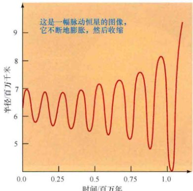
▲ 图20.8 红巨星的不稳定性
被来自内部的氦壳层闪光冲击，并且在稳定性不断被破坏和重建的影响下，红巨星的外表层也变得不稳定并进入一系列的脉动当中。最终，恒星包层被抛掉形成行星状星云。这是一幅脉动恒星的图像，它不断地膨胀，然后收缩。
恒星表层不定性的增加使恒星变得更为复杂。在每次脉动的峰值附近，表面温度降低至电子可以与原子核重新结合形成原子。🔗(3.2节) 每次原子的复合会产生额外的光子，给予气体一些额外的“外推力”，并导致一些气体的逃逸。因此，在来自内部的不断增强的辐射驱动下，并且由于内核和外表层的不稳定性而加速。在不到几百万年的时间里，恒星几乎所有的包层都以几十千米每秒的速度被喷入太空。
随着时间的推移，出现了极不寻常的结果。现在的“恒星”由两个截然不同的部分构成，它们共同组成了表20.1中的第12阶段。中心是一个主要由碳灰烬组成的小且界限明确的内核。它炽热、致密并且仍然非常明亮，只有内核的最外层仍然在将氦聚变成碳和氧。在内核之外很远处是不断扩张的尘埃和冷却气体云——从巨星喷发的包层——弥漫了大约太阳系大小的空间。
随着内核耗尽剩余的燃料，它开始收缩并升温，移动到赫罗图的左边。最终，它变得非常炽热，以至于它的紫外辐射将周围尘埃气体云的内部电离、产生被称为行星状星云的壮观景象。图20.9和图20.10展示了一些著名的行星状星云。总的来说，银河系中已知有超过1500个行星状星云。这里的行星一词有些误导人，因为这类天体与行星毫无关系。此名字起源于18世纪，用当时分辨率很差的小型望远镜观测时，对某些天文学家来说，这些闪耀的气体壳层看起来就像我们太阳系中行星的圆环。
注意，行星状星云的发光机制基本上与我们之前研究的发射星云的能量来源一样——嵌在冷却气体云中的炽热恒星的电离辐射。🔗(7.2节) 然而，要认识到这两类天体有着截然不同的起源，代表着恒星演化过程中完全独立的阶段。第7章里讨论过的发射星云是最近诞生的恒星的标志；相反，行星状星云则表明恒星即将来到的死亡。
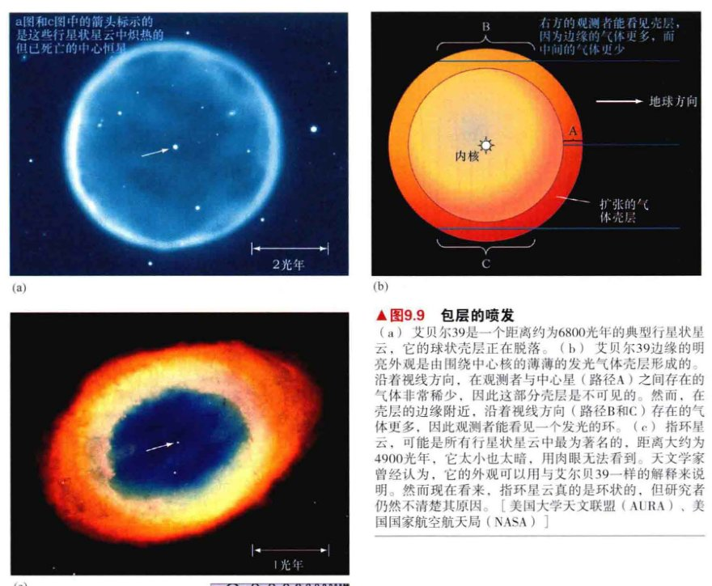
▲ 图20.9 包层的喷发
(a) 艾贝尔39是一个距离约为6800光年的典型行星状星云，它的球状壳层正在脱落。(b) 艾贝尔39边缘的明亮外观是由围绕中心核的薄薄的发光气体壳层形成的。沿着视线方向，在观测者与中心星（路径A）之间存在的气体非常稀少，因此这部分壳层是不可见的。然而，在壳层的边缘附近，沿着视线方向（路径B和C）存在的气体更多，因此观测者能看见一个发光的环。(c) 指环星云，可能是所有行星状星云中最为著名的，距离大约为4900光年，它太小也太暗，用肉眼无法看到。天文学家曾经认为，它的外观可以用与艾贝尔39一样的解释来说明。然而现在看来，指环星云真的是环状的，但研究者仍然不清楚其原因。[美国大学天文联盟 (AURA)、美国国家航空航天局 (NASA)]
天文学家曾经以为逃逸的巨星包层或多或少是球形，在三维空间中完全包裹住内核，就像它仍然还是恒星的一部分那样。图20.9(a)所展示的例子可能实际上就是这样的情况。这个行星状星云的“环”实际上是三维的发光气体壳层——它的晕状外观只是一种错觉。如图20.9(b)所示，星云的边缘看起来更亮只是因为沿着视线方向有更多的发光气体、从而带来亮环的错觉。
然而，现在表明这种情况似乎是少数。越来越多的证据表明（当然原因也尚未完全了解），红巨星在质量流失的最后阶段，通常绝对是非球形的。例如，图20.9(c)展示的著名的指环星云可能实际上正好是环状，而不仅只是源于我们对一个发光球形壳层的观测，许多行星状星云比这要复杂得多。如图20.10所示，一些行星状星云表现出更加复杂的结构，暗示着恒星的环境——包括一颗双星伴星的存在性——可能在决定星云形状和外观方面扮演了重要的角色。
中心恒星逐渐暗淡并最终冷却，扩散的气体云变得越来越弥散，最后消散在星际空间中。仅仅几千万年以后，发光的行星状星云就会从视线中消失。随着气体云重新进入星际介质，它在银河系的演化中开始起到重要的作用。在红巨星生命的最后阶段，内核中的碳和不燃烧的氦之间发生的核反应形成氧，在某些情况下，甚至形成更重的元素，比如氖和镁。其中的一些反应也释放出中子，不带任何电荷，不用克服任何静电斥力，因此能够与已经存在的原子核相互作用并形成更重的元素（见第10章）。所有的这些元素——氦、碳、氧和重一些的元素——在恒星最后的岁月里通过对流，从内核深处被“挖掘”到包层里，在巨星包层逃逸时丰富了星际介质的成分。低质量恒星的演化几乎是在银河系和其他星系的盘面中所观测到的所有富碳尘埃的来源。🔗(7.1节)
第13阶段：白矮星
碳内核——位于行星状星云中心的恒星的遗物——继续演化。随着包层的消散，原来隐藏在红巨星大气面纱下的内核变得可见。内核从扩散的气体面纱下出现需要几万年的时间。内核非常小，在包层喷出形成行星状星云时，内核已经缩小至大约地球大小（在某些情况下，甚至可能比地球还要小）。它的质量大约是太阳质量的一半。虽然个头小看起来很暗弱，但当第一次变得可见时，这颗小型的“恒星”有着白色的炽热的表面，仅仅是靠存储的热量发光，而不再是通过核反应。内核的温度及其尺寸决定了它的新名字：白矮星。这就是表20.1中的第13阶段。图20.11显示了恒星在赫罗图中从第11阶段的红巨星演化到第13阶段的白矮星时所经过的大致路径。

▲ 图20.10 行星状星云
(a) 距离约为4800光年的位于双子星座的爱斯基摩星云清晰地展示了一些物质“气泡”（或壳层）正从行星状星云吹向太空。(b) 距离约为3200光年的猫眼星云是更为复杂的行星状星云的一个例子，可能产生自一对都有包层（红色是可见光，蓝色是X射线）抛出的双星（在中心无法可见）。(c) 距离为2000光年的M2-9显示出令人赞叹的发光气体双叶（或喷流）结构，源自位于中心的、正在死亡的恒星，以大约300 km/s的速度喷涌而出。[美国大学天文联盟 (AURA)、美国国家航空航天局 (NASA)]
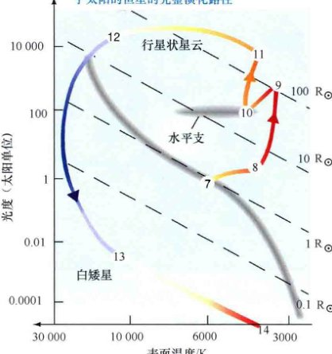
▲ 互动图20.11 赫罗图上的白矮星
一颗恒星从水平支（第10阶段）到白矮星阶段（第13阶段），其间经过了渐近巨星支，画出了一条穿过整个赫罗图的演化轨迹。
不是所有的白矮星都被发现是行星状星云的核心，银河系中已经发现了几百颗“裸露的”白矮星，它们的包层在很久以前就已经消散不见了（或者是被一颗双星伴星剥离，接下来就会讨论）。图20.12展示了一颗白矮星的例子，天狼星B，它正好距离地球特别近，是更明亮的、更有名的天狼星A的暗弱伴星。🔗(详细说明6-2) 表20.2列出了天狼星B的一些性质。天狼星B的密度比太阳系中我们所熟悉的任何事物都要致密约100万倍，在比地球还小的体积内挤进了比太阳还大的质量。事实上，天狼星B是一颗有着异常高质量的白矮星——它被认为是一颗质量大约为四倍太阳质量的恒星演化的产物。探索20-1会讨论天狼星B演化的另一种可能的特殊性。
表20.2 天狼星B，一颗近邻白矮星
| 质量 | 1.1 太阳质量 |
| 半径 | 0.0073 太阳半径 (5100 km) |
| 光度（总） | 太阳光度 ($10^{24}$ W) |
| 表面温度 | 27 000 K |
| 平均密度 | $3.9 \times 10^9 \text{kg/m}^3$ |
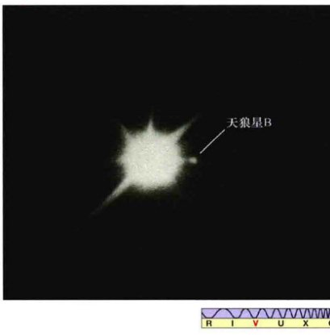
▲ 图20.12 天狼双星系统
天狼星B（更大、更亮的天狼星A右边的小光斑）是一颗白矮星，它是天狼星A的伴星。天狼星A图像上的突起并不是真实的；它们是由望远镜的支撑结构所引起的。[帕洛玛天文台 (Palomar Observatory)]
哈勃太空望远镜 (HST) 对邻近球状星团的观测揭示了长期以来理论所预言的白矮星序列，但之前的观测太过暗弱，无法在这样的距离上探测到白矮星。图20.13(a) 展示了球状星团M4的地面观测，它距离地球1700 pc。图20.13(b) 显示了HST对该球状星团的一小部分范围的特写，从星团更亮的主序、红巨星和水平支恒星中揭示出几十颗白矮星。当画在赫罗图上时（见图20.14），白矮星完美地落在图20.11所指示的路径上。
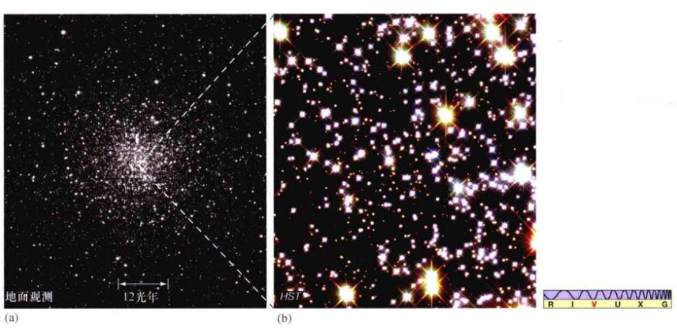
▲ 图20.13 遥远的白矮星
(a) 利用亚利桑那的基特峰国家天文台的大型地基望远镜看到的球状星团M4（参见图7.13），它是距离我们最近的球状星团，有5500光年远。(b) 哈勃望远镜拍摄的M4的“中心区”的特写，在两平方光年的小范围内，有大约100颗白矮星。[美国大学天文联盟 (AURA)、美国国家航空航天局 (NASA)]
并不是所有的白矮星都是由碳和氧构成的。正如前面提到的，理论预言了极小质量恒星（质量小于四分之一太阳质量）永远不会引起氦聚变。相反，在其中心温度达到引发三阿尔法过程所需的1亿开之前，这类恒星的内核会由电子简并压力所支撑。这类恒星的内部是完全对流的，确保了新的氢不断地从包层混合到内核中。因此，与图20.2所示的太阳的例子不同，一颗不燃烧的纯氦内核永远不会出现，最终恒星中所有的氢都会转变为氦，形成一颗氦白矮星。
这种转换发生所需的时间非常的长——几万亿年——因此氦白矮星实际上还没有以这样的方式形成。🔗(6.8节) 然而，如果太阳质量大小的恒星是一个双星系统的成员的话，它的包层就可能会在红巨星阶段被其伴星的引力牵引所剥离（见20.6节），将氦内核暴露出来并在氦聚变能够发生之前终止恒星的演化。几个这样的低质量氦白矮星已经在双星系统中被实际探测到了。
最后，在质量比太阳大一些的恒星中（在碳内核形成时质量接近8倍太阳质量限制的“低质量”恒星），内核的温度可能高到足以引发额外的反应：
$^{16}\text{O} + ^4\text{He} \rightarrow ^{20}\text{Ne} + \text{能量}$
这最终会导致罕见的氖-氧白矮星的形成。
第14阶段：黑矮星
一旦一颗孤立的恒星成为白矮星，它的演化就结束了。（如我们将在第10章里看到的，双星中的白矮星可能会有进一步的活动。）这颗孤独的白矮星不断地随时间冷却并变暗，并沿着图20.11中接近赫罗图底部的白-黄-红色轨迹行进，最终成为一颗黑矮星——一颗冰冷的、致密的太空中的灰烬。这是表20.1中的阶段14，是恒星的坟墓。
冷却的矮星不会随着它的消逝而收缩太多，尽管它的热量耗散进入太空，但引力并不会进一步将其压缩。在恒星的极高密度下（从白矮星阶段开始），即使恒星的温度几乎接近绝对零度，电子对挤压的反抗也会支撑住恒星——与红巨星内核在氦闪附近所处的电子简并状态相同。随着矮星的冷却，它的大小仍然约和地球相当。
比较理论和实际
到目前为止，所有展示的赫罗图和演化轨迹都是理论上的构建，主要基于对恒星内部运作的计算机模型来建立。在继续我们对恒星演化的研究之前，让我们花一点时间来比较模型和实际观测结果。图20.14(a)展示了美丽的球状星团M80，距离地球约8000pc。图20.14(b)展示了最近利用与M80的年龄和成分大致相同的其他一些球状星团中的恒星所构建的复合赫罗图。这幅图覆盖了恒星光度的整个范围，从明亮的红巨星到暗弱的红矮星和白矮星。对主序、巨星和水平支（见20.5节）的理论模型拟合说明其年龄约为120亿年，使这些星团成为目前所知的银河系中最古老的天体，同样，也成为早期宇宙状况的关键指标。
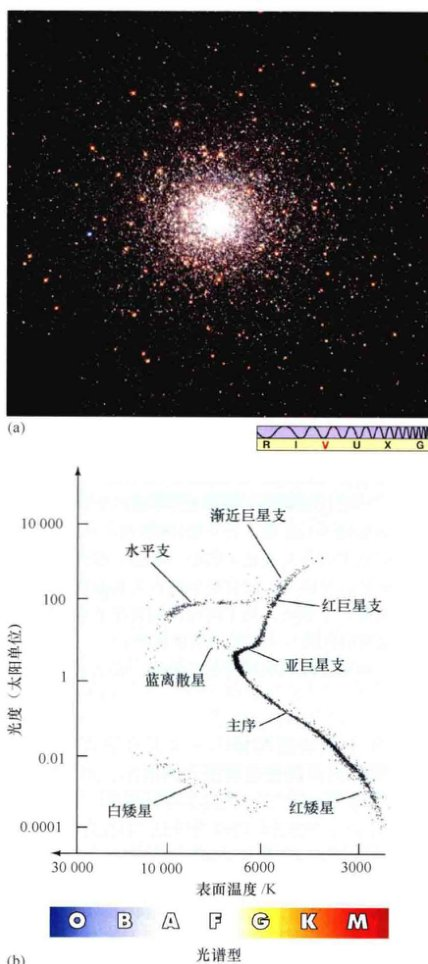
▲ 图20.14 球状星团的赫罗图
(a) 距离地球 26 000光年的球状星团M80。(b) 复合赫罗图，基于地面和空间对几个总体成分与M80类似的球状星团的观测所作。理论预言的和图20.11中图示的各种不同的演化阶段在图中清晰可见。还要注意蓝离散星——随着其他恒星演化进入巨星阶段，一些主序星看起来像是被“遗留”下来的。它们可能是由双星系统并合而成的，或者是由这些非常密集的恒星系统中的低质量恒星之间的实际碰撞产生的。（参见图20.20）[美国国家航空航天局 (NASA)，数据取自W. E. 哈里斯 (W.E.Harris)]
这个星团非常古老的年龄意味着质量超过太阳质量的4/5的恒星已经演化经过了红巨星阶段，大体以白矮星为主。因此，该星团的赫罗图可以直接与图20.11比较，其中红巨星支、水平支和渐近巨星支恒星的质量大约都是太阳质量的1倍。理论与观测的相似性是惊人的——恒星在阶段7至阶段13的每个演化阶段中，都可见数据与理论模型的一致。
图20.14(b)中标示为蓝离散星的天体乍一看似乎与刚刚描述过的理论有悖。许多星团中都能观测到它们，虽然它们位于主序，但如果考虑其所处星团的年龄，它们的位置表明它们应该在很久以前就演化进入了白矮星阶段。它们是主序星，但它们不是在星团形成时诞生的。相反，它们是新近通过低质量恒星的并合形成的——事实上，它们的形成时间如此之近，以至于它们还来不及演化成巨星。
在某些情况下，这类并合是双星系统中恒星演化的结果，成员星一起演化、成长并发生接触（见20.6节）。而在其他情况下，并合被认为是恒星发生实际碰撞的结果。M80的核心包含了大量的恒星，而这些恒星挤在相当小的空间内。例如，以太阳为中心、半径为2pc的球体仅包含四颗恒星，包括太阳本身。🔗(6.1节) 而在以M80为中心，同样的2pc半径球体将包含超过1000万颗恒星——如果是这样，我们的夜空将闪耀着成千上万颗比金星还亮的天体！球状星团密集的中央核心是整个宇宙中为数不多的恒星碰撞可能发生的地方。
HST的高精度观测揭示了一个新的、至今悬而未决的球状星团的谜团，这可能迫使天文学家们大大改变他们对于大型恒星星团形成的看法。图20.15展示了星团NGC2808的赫罗图，在图20.15(c)中显示出之前地面观测所没有发现的三条不同的主序。三条主序中的恒星有着不同的氦、碳和氧成分比，并被认为是在大约1亿年的时间里发生了多次恒星形成的结。
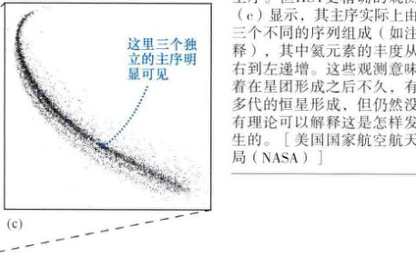
▲ 图20.15 多代恒星
球状星团NGC2808 (a) 的地面观测得到的赫罗图 (b) 展示了一个看起来正常的主序。但HST更精确的观测 (c) 显示，其主序实际上由三个不同的序列组成（如注释），其中氦元素的丰度从右到左递增。这些观测意味着在星团形成之后不久，有多代的恒星形成，但仍然没有理论可以解释这是怎样发生的。[美国国家航空航天局 (NASA)]
果。模型表明，两代富含氦的恒星形成于因第一代恒星的演化而使氦富集的气体中，但天文学家仍然不知道在可用的时间内如何能发生这种情况。无论它是如何发生的，这似乎都是一种普遍的现象，现在许多球状星团的高分辨率研究揭示了类似的多主序的化学变化。事实上，一些观测者甚至会宣称，像这样的多恒星星族是银河系球状星团系统中的正常现象。
为什么低质量恒星内核中的核聚变会停止？
20.4 质量比太阳更大的恒星的演化
大质量恒星的演化比小质量恒星的演化要快得多。恒星的质量越大，它对燃料的消耗就越贪婪，在主序上的时间也就越短。太阳在主序上所花的时间总共为100亿年左右，但一颗5倍太阳质量的B型恒星只会在主序上待几亿年，一颗10倍太阳质量的O型恒星大约在2000万年内就会离开主序。质量越大的恒星演化越快的趋势甚至在恒星离开主序后仍然会继续。
大质量恒星所有的演化事件发生得更加迅速，因为它们更大的质量和更强的引力会产生更多的热量，加速了恒星演化的所有阶段。事实上，氦聚变过程发生得如此之快，以至于大质量恒星有着截然不同的演化轨迹。随着恒星变成一颗超巨星，它的包层开始膨胀并且冷却。
红超巨星
恒星离开主序的一个基本原因是：它们内核中氢被耗尽了。因此，定性地讲，主序之外恒星演化的早期阶段在所有情况下都是一样的：内核中主序氢燃烧（第7阶段），最终形成了一颗不燃烧的、收缩的氦内核，一个氢燃烧的壳层（第8阶段和第9阶段）环绕着它。大质量恒星在离开主序前往红巨星区域的过程中，内部结构与其低质量的堂兄弟十分相似。然而，在此之后，它们的演化轨迹就分道扬镳。
图20.16比较了三颗恒星的主序后演化，质量分别为1倍、4倍和10倍太阳质量。注意，类太阳恒星几乎沿着红巨星支垂直上升，而更大质量的恒星在离开主序上部后几乎是水平地穿过赫罗图。随着它们半径的增大和表面温度的降低，它们的光度基本保持恒定。
在质量超过太阳质量2.5倍的恒星中，氦的燃烧进行得很平顺，而不是爆发性的，因此没有氦闪。计算表明，在温度达到引发氦燃烧所需的 $10^8\text{K}$ 时，恒星的质量越大，内核的密度越低，电子简并对压力的贡献就越小。因此，高于2.5倍太阳质量时，之前所描述过的不稳定的内核条件便不再出现。如图20.16所示，在氦开始聚变形成碳时，4倍太阳质量的红巨星仍然保持红巨星状态。恒星不会突然跳到水平支，也没有后续的重新沿巨星支的上升。相反，恒星在赫罗图的顶端附近来来回回地平稳循环运动。
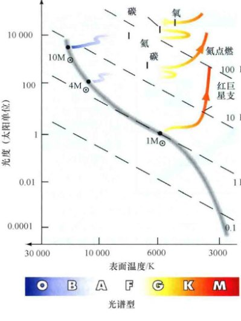
▲ 图20.16 大质量恒星的演化轨迹
大质量恒星的演化轨迹（图示为4倍和10倍太阳质量）与类太阳恒星（1倍太阳质量）的演化轨迹对比。大质量恒星平稳地穿过赫罗图上部，成为红超巨星，而没有经历氦闪。
更重要的差异发生在质量约为8倍太阳质量时——20.1节提到过的大质量恒星和低质量恒星的分界线。低质量恒星永远不能达到发生碳原子核聚变所需的6亿开，因此它们的结局是碳-氧（或可能是氖-氧）白矮星。然而，大质量恒星可以聚变的不仅仅是氢和氦，随着恒星内核不断地收缩并且中心温度不断地升高，也能发生碳、氧甚至是更重元素的聚变。随着内核演化，核聚变的速度也会加速。
如图20.16所示，10倍太阳质量的恒星演化过程如此之迅速，以至于恒星甚至在氦聚变开始之前也不会进入红巨星区域。当它仍然十分接近主序时，恒星的中心温度就已经达到了 $10^8\text{K}$。随着中心的每一种元素由于燃烧而被消耗掉，内核收缩并升温，核聚变开始重新发生。新的内核形成，再次收缩，再次升温，不断往复。恒星的演化轨迹继续平滑地穿过赫罗图的超巨星区域，似乎不会受到每一次新燃烧阶段的影响。随着恒星的表面温度降低、恒星的半径增大，膨胀成为一颗红超巨星。🔗(6.4节)
随着越来越重的元素以不断加快的速度形成，图20.16所示的大质量恒星就非常接近它生命的终点了。我们将在下一章里更详细地讨论这类恒星的演化和最终命运。在这里只想说，这样的恒星注定会死于猛烈的超新星爆发——这是一种灾难性的爆炸，不夸张地说，释放的能量很可能会将恒星撕成碎片——就在内核开始发生碳和氧的聚变反应之后不久。对大多数实际的观测研究来说，大质量恒星的演化如此之快，在离开主序后不久，它们就爆炸并且死亡了。
猎户星座中的亮星参宿七是主序后蓝超巨星的一个好例子。参宿七的半径为太阳的70倍，总光度超过60 000太阳光度，它起源时的质量大约是17倍太阳质量，尽管从其形成以来，剧烈的恒星风可能已经带走了其质量的一部分。虽然仍然接近主序，但参宿七可能已经在内核中开始了氦到碳的聚变。
也许最著名的红超巨星是同样位于猎户座的参宿四（如图6.8和图6.11所示），它和参宿七并享该星座最亮的星的称号。它的光度约是太阳在可见光波段亮度的 $10^4$ 倍，在红外波段亮约 $10^5$ 倍。天文学家认为，目前在参宿四的内核中，正在将氦聚合成碳和氧，但它的最终命运还是不确定的。我们知道得最多的是，这颗恒星在形成时的质量在12~17倍太阳质量之间。然而，与参宿七以及其他许多超巨星一样，参宿四有着强烈的星风，并且被它自己造成的巨型尘埃壳层包围着（见探索20-2）。它也在脉动着，半径有着大约60%的变化。脉动和强烈的星风可能与恒星表面观测到的巨型黑子有关（见图6.11）。这些合在一起暗示了，参宿四自形成以来，已经流失掉了许多质量，但仍然无法确定到底流失了多少。
表20.3 不同质量恒星的演化终点
| 初始质量 / 太阳质量 |
最终状态 |
| 少于 0.08 |
(氢) 褐矮星 |
| 0.08 ~ 0.25 |
氦白矮星 |
| 0.25 ~ 8 |
碳-氧白矮星 |
| 8 ~ 12 (近似) |
氖-氧白矮星 |
| 大于 12 |
超新星 (第10章) |
| 注：准确的数字取决于恒星在主序上和离开主序后的质量流失（我们对此知之甚少）。 |
路的尽头
原恒星和恒星的演化是因为引力总是倾向于促使不燃烧的恒星内核收缩并加热。收缩一直不停，直到由于电子简并压使之停止或是引发新一轮的核聚变。在后一种情况下，一颗新的不燃烧的内核出现，于是整个过程开始重复。恒星的质量越大，在恒星最终死亡前重复的次数越多。表20.3列出了一些不同质量的恒星可能的演化结果。出于完整性考虑，褐矮星——无法在其内核开始氢聚变的低质量原恒星的最终产物——也一并列出。🔗(8.3节)
注意，我们之前的“低质量”和“大质量”之间的8倍太阳质量分界线实际指的是碳内核形成时的质量。由于非常明亮的恒星往往也有强烈的星风（探索9-2），因此，质量在10~12倍太阳质量之间的主序恒星仍然可能成功地避免成为超新星。很遗憾，我们不知道参宿四或参宿七到底损失了多少质量，因此我们仍然不能判定它们是否处于成为超新星的质量阈值之上还是之下。或是爆发，或是反之成为一颗氖-氧白矮星，我们现在无法判断。我们可能只有等着瞧了——在大约100万年内我们就能搞清楚！
大质量恒星和小质量恒星演化的本质区别是什么？
20.5 星团内的恒星演化
星团提供了完美的验证恒星演化理论的实验室。给定星团中的每一颗恒星几乎都是同时形成的，来自于同一团星际云，有着几乎相同的成分。由于星团内不同恒星之间只有质量变化，因此我们能够用非常简单明了的方式去验证理论模型的准确性。我们已经较为详细地研究了单颗恒星的演化轨迹，现在让我们来考虑它们随时间的面貌变化。
第8章中，我们看到天文学家通过确定哪些恒星已经离开主序来估计星团的年龄。🔗(8.6节) 事实上，用于年龄测量的主序生命期只代表了从恒星演化的理论模型中获得的一小部分数据。从零龄主序开始，天文学家可以预言新诞生的星团在后续任何时间内的准确外观——哪些恒星位于主序，哪些恒星变成巨星，还有哪些恒星本身已经燃烧殆尽。尽管我们不能进入恒星内部来验证我们的模型，但是我们能够用理论预测来比较恒星的外表。具体地说，理论和观测符合得相当好。
演化星团的赫罗图
我们的研究开始于星团形成后不久，这时主序上部已经完全形成，恒星燃烧稳定，并且低质量的恒星刚开始进入主序，如图20.17(a)所示。在此早期阶段，星团的外观主要由其质量最大的恒星所决定——明亮的蓝超巨星。现在让我们跟随星团随时间前行，看看它如何在赫罗图上演化吧。

▲ 图20.17 赫罗图上的星团演化
这是一个假想的、演化中的星团的赫罗图。(a) 最初，位于主序顶端的恒星已经开始稳定地燃烧，而主序的底部仍在形成当中。(b) $10^7$年时，O型恒星已经离开主序（如箭头所示），可以看见一些红巨星。(c) $10^8$年时，可见更多的红巨星，主序的底部几乎完全形成。(d) $10^9$年时，亚巨星支和红巨星支已经变得明显了，主序底部已经完全形成。(e) 到 $10^{10}$年时，星团的亚巨星支、红巨星支、水平支和渐近巨星支都清晰可见，许多白矮星已经形成。
图20.17(b) 显示了1000万年以后，星团赫罗图的样子。质量最大的O型恒星已经离开主序。就像刚讨论过的，它们中的大多数已经爆炸并消失了，但可能仍有一两颗成了可见的红超巨星。星团中余下恒星的外观没有太大的改变——它们的演化太慢，在这样一个相对较短的时间内，不足以发生什么变化。星团的赫罗图表明，主序被稍稍截断，伴随有相当不明显的红巨星区域。图20.18展示了孪生疏散星团英仙座h和$\chi$（希腊字母），以及它们的复合赫罗图。比较图20.18(b)的赫罗图与图20.17的赫罗图，天文学家估计这对星团的年龄约为1000万年。
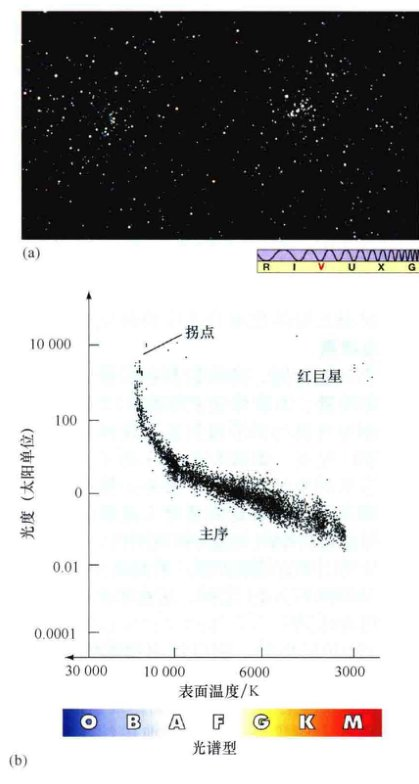
▲ 图20.18 新诞生星团的赫罗图
(a) “双重星团”英仙座h和$\chi$。这两个疏散星团看起来似乎是同时形成的，甚至可能互相绕转。(b) 这对赫罗图表明其中的恒星非常年轻——可能只有1000万年到1500万年的历史。即便如此，质量最大的恒星也已经离开主序了。[美国国家光学天文台 (NOAO)]
一亿年以后 [见图20.17(c)]，比B5型恒星（约4~5倍太阳质量）亮的恒星已经离开主序，可见更多的几颗红超巨星。此时，星团中的大部分低质量恒星终于到达主序阶段，尽管最暗的M型恒星可能仍然处于收缩阶段。星团的外观现在由明亮的B型主序恒星和更亮的红超巨星所主导。
恒星渐渐改变方向，前往巨星支。天文学家将观测到的主序的最亮一端称为主序拐点。任意时刻正好演化离开主序的恒星质量被称为拐点质量。
在10亿年时，主序的拐点质量大约是两倍太阳质量，大致对应于光谱型A2的恒星。此时刚好可见与低质量恒星演化相关联的亚巨星和巨星支，如图20.17(d)所示。主序底部的形成现在已经完成。另外，第一代白矮星刚刚出现，尽管它们通常太过暗弱，在多数星团所处的距离上无法被观测到。图20.19展示了毕星团和它的赫罗图，看起来介于图20.17(c)和图20.17(d)之间，这意味着该星团的年龄约为6亿年。

▲ 图20.19 年轻星团的赫罗图
(a) 位于金牛座的毕星团是一个相对年轻的星团，肉眼可见，距离为150光年。(b) 该星团的赫罗图大致在光谱型为A型的恒星处被切断，意味着它的年龄约为6亿年。一些大质量恒星已经变成了白矮星。[美国国家光学天文台 (NOAO)、欧洲航天局 (ESA)]
到100亿年时，拐点到达光谱型为G2的与太阳质量相当的恒星处。现在，亚巨星和巨星支都清晰可见 [见图20.17(e)]，水平支和渐近巨星支则有区别地出现在赫罗图中，星团中也出现了许多白矮星。尽管处于所有这些演化阶段的恒星类型在图20.17(d)所示的年龄为10亿年的星团里也出现过，但那时它们的数量很少——一般只占星团恒星总数的几个百分点。另外，由于大质量恒星演化得如此迅速，因此它们在不同区域出现的时间非常短。低质量恒星数量更多，演化也更加缓慢，因此它们中的多数在赫罗图上给定区域内所待的时间更长，使得它们的演化轨迹更容易分辨。
图20.20展示了球状星团杜鹃座47。通过细致地调整理论模型，直到星团的主序、亚巨星支、红巨星支和水平支都吻合得很好，天文学家才确定了杜鹃座47的年龄在100亿~120亿年之间，比图20.17(e)中假想的星团要年老一些。事实上，用这种方法确定的球状星团的年龄范围非常小——银河系中所有的球状星团似乎都是在100~120亿年前形成的。
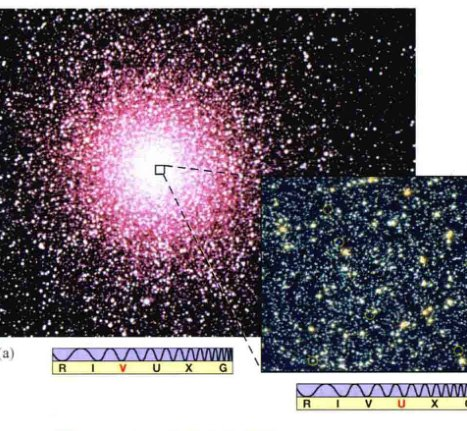
▲ 图20.20 老年星团的赫罗图
(a) 南天球的球状星团杜鹃座47。(b) 用理论模型拟合杜鹃座的主序拐点、巨星支和水平支，得到它的年龄在120亿~140亿年之间，这使它成为目前所知的银河系中最年老的天体之一。小插入图是杜鹃座核心区域的一幅高分辨率紫外图像，由哈勃太空望远镜拍摄，显示出许多蓝离散星——位于拐点之上的主序上的大质量恒星，这些蓝离散星可能来自于双星系统的并合。(见图20.14)
恒星演化理论
有关恒星生与死的现代理论是科学方法在起作用的一个很好的例子。🔗(1.2节) 面对海量的观测数据，却只有很少或者根本没有理论去整理或解释这些数据，天文学家在19世纪末和20世纪初煞费苦心地分门归类了他们所观测到的恒星的属性。🔗(6.5节) 在20世纪上半叶，随着量子力学开始在亚原子尺度上详细解释光和物质的表象，对许多关键的恒星性质的理论解释应运而生。🔗(3.2节) 自20世纪50年代以来，一个真正全面的理论已经出现，它试图将原子和原子核物理、电磁学、热力学和万有引力的基本原理整合成一个连贯的整体。随着天文学家不断地磨砺他们的思想，理论和观测携手并进，互相精炼和验证对方的细节。
恒星的演化是天体物理学中非常成功的故事之一。和所有优秀的科学理论一样，它做出了有关宇宙的可以明确验证的预言，同时保持了足够的灵活性，以便在新发现出现时吸收容纳它们。在20世纪之初，一些科学家曾对了解恒星的成分感到绝望，更不用说去了解恒星为何发光、如何演变了。如今，恒星演化理论是现代天文学的一块基石。它的预言扩展了我们在书本中对宇宙的认识，超越了可观测宇宙的限制。
为什么观测星团对恒星演化理论如此重要？
20.6 双星系统中的恒星演化
我们注意到，银河系中的大多数恒星并不是孤立的，实际上是双星系统的成员。然而，到目前为止，我们对恒星演化的讨论仅仅只关注了独立的恒星。这样的片面性关注提醒我们要考量双星系统的成员对我们刚刚描述过的恒星演化轨迹会产生怎样的改变。事实上，由于核聚变发生在恒星深处的内核中，伴星的存在是否根本不会有任何显著的影响呢？也许答案并不令人惊讶，这取决于所讨论的两颗恒星之间的距离。
对那些成员星分隔得非常远的双星系统来说——也就是说，恒星之间的距离可能大于1000个恒星半径——两颗恒星的演化或多或少是彼此独立的，每一颗都遵循特定质量的单星所对应的轨迹。然而，如果两颗恒星距离更近，那么其中一颗恒星的引力牵引可能会严重影响另一颗恒星的包层。在这种情况下，二者的物理性质都可能大大偏离那些孤立单星的计算结果。
例如，考虑大陵五（英仙座贝塔星，英仙座中第二亮的恒星）。通过研究它的光谱以及光度变化，天文学家确认，大陵五实际上是双星（事实上，是一颗交食双线分光双星，如第6章所述），并且非常准确地测量得到了它的性质。🔗(6.7节) 大陵五由一颗3.7倍太阳质量的、光谱型为B8（蓝巨星）的主序星和一颗质量为太阳质量的4/5的亚红巨星伴星组成，伴星在非常接近主星的圆轨道上运动。两颗恒星相距400万千米，轨道周期约为3天。
乍看之下，这些发现似乎有些古怪。根据我们之前的讨论，较大质量的主序星应该比较小质量的伴星演化得快。如果两颗恒星同时形成（假设情况如此），那么质量为太阳质量的4/5的恒星首先进入巨星阶段应该是毫无希望的。要么是我们的恒星演化理论错得离谱，要么就是某些因素改变了大陵五系统的演化。幸运偏向了理论学家，后者才是实际情况。

▲ 图20.21 恒星的洛希瓣
双星系统中每颗恒星都可看作被“作用范围”——即被洛希瓣所围绕着，在该范围内的物质被认为是恒星的“一部分”。两个泪珠状的洛希瓣在两颗恒星之间的拉格朗日点处相接。在洛希瓣之外，物质可以相对容易地在恒星之间流动。
如图20.21所示，双星系统中的每颗恒星都被自己的泪珠状“作用范围”所环绕，在该范围内，恒星的引力牵引主宰了另外那颗恒星和双星的整体转动。任何在此范围内的物质均“属于”这颗恒星，并且不会轻易流入另一颗伴星或是流出双星系统。在这两个区域之外，气体在恒星之间的流动可能相对要容易些。这两个泪珠状的区域被称为洛希瓣，以法国数学家爱德华·洛希命名，他在19世纪首先研究了双星问题，我们已经在书中有关行星环的部分介绍过他的工作。两颗恒星的洛希瓣在它们连线上的一点上重合——内拉格朗日点 (L1)，我们在第14章中讨论太阳系的小行星运动时了解过。在该拉格朗日点处，两颗恒星的引力正好相等，保持双星系统旋转的平衡。伴星的质量越大，洛希瓣越大，它的中心距离拉格朗日点也就更远（另一颗恒星距离更近）。
天文学家认为，大陵五起初是一个不接双星系统，两个成员都安定地处在各自的洛希瓣内。为参考起见，我们将现在质量为太阳质量4/5的亚巨星标为恒星1，而3.7倍太阳质量的主序星标为恒星2。最初时，恒星1是两颗恒星中质量较大的一颗，质量大概是太阳质量的3倍，因此它首先进入主序拐点。恒星2起初是一颗质量较小的恒星，质量可能与太阳相当。随着恒星1上升进入巨星支，它充满它的洛希瓣，气体开始流入恒星2。这样的物质转移使得恒星1的质量减少而恒星2的质量增加，转而使恒星1的洛希瓣随着引力的减小而收缩。这导致恒星1的物质溢出其洛希瓣的速度加快，随之发生一段不稳定的快速物质转移，将恒星1的大部分包层转移到恒星2中。最终，恒星1的质量变得比恒星2要小。详细的计算显示，物质转移的速度那时会急剧下降，恒星进入我们今天所见的相对稳定的状况。大陵五成员星的这些演变如图20.22所示。
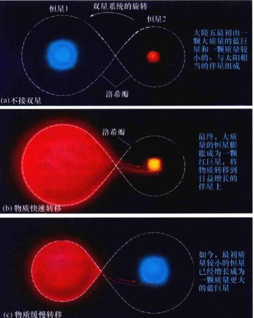
▲ 图20.22 大陵五的演化
(a) 最初，大陵五可能是由两颗主序恒星构成的不接双星。(b) 随着质量较大的成员（恒星1）离开主序，它膨胀填满它的洛希瓣，并最终溢出洛希瓣，将其大量的物质转移到质量较小的伴星（恒星2）上。(c) 如今，恒星2是两颗恒星中质量较大的那颗，而它仍然处于主序阶段。恒星1仍然处在亚巨星阶段，并且仍在填充它的洛希瓣，导致物质源源不断地涌入它的伴星。
在大陵五系统中，由于都是双星系统的一部分，两颗恒星的演化都发生了根本性的改变。原来质量更大的恒星1现在是一颗低质量的红亚巨星，而质量与太阳相当的恒星2现在是一颗大质量的蓝主序巨星。恒星1包层的质量流失可能会阻止其进入氦闪。相反，它裸露的核心最终可能会留下一颗氦白矮星。在几千万年内，恒星2本身也会进入巨星支并填满它自己的洛希瓣。如果恒星1那时仍然是一颗亚巨星或巨星，那么就会产生一个相接双星系统。相反，如果恒星1到那时变成一颗白矮星，那么将开始新的物质转移——物质从恒星2流回恒星1。在那种情况下（我们将在第10章中看到），大陵五可能会面临着非常活跃且激烈的未来。
正如分子很少展现出构成它们的原子的物理或化学属性那样，双星也可以表现出与其任何成员星属性都截然不同的性质。大陵五系统是双星演化中相当简单的例子，然而它仍然给予我们这样的启示：当两颗恒星相互依存的演化时，可能会发生各种节外生枝的事情。在接下来的两章里，我们将重新回到这个话题，继续讨论恒星的演化和可能接踵而来的物质的奇异状态。
为什么理解双星的演化很重要？
终极问题
如果类太阳恒星都如此安静地、类似地结束它们的生命，那为什么它们散开的遗迹在天空中看起来如此不同？行星状星云展示出各种奇形怪状和大小，一些成环形和球状，而另一些则缠绕成结或如喷涌而出。是什么导致了这些不同的结构？这是否是由恒星本身的固有性质决定的？还是由死亡中的恒星将其物质抛向星际空间时所处的复杂环境所决定的？
章节回顾
小结
- 恒星大多数时间处在主序阶段，这时它们处于恒星演化的核心氢燃烧(p.216) 阶段——在它们的中心稳定地将氢聚变成氦。当核心的氢耗尽后，恒星会离开主序。太阳大概在其主序阶段的一半处，在大约50亿年内将耗尽氢。低质量恒星的演化比太阳要缓慢得多；而大质量恒星的演化要更快。
- 当类太阳质量恒星内部发生的核燃烧停止时，恒星核心的氦仍然太冷，不会聚变成更重的元素。没有了内部能量来源，氦核无法抵消自身的引力作用，于是开始收缩。在这一阶段，恒星处于氢壳层燃烧(p.217) 阶段，一个不燃烧的氦核周围环绕着一层燃烧的氢。氦核的收缩所释放出的能量加热了氢燃烧壳层，大大地提高了壳层中的核反应速度，恒星于是变得更亮，而恒星包层膨胀并冷却。像太阳这样的低质量恒星在赫罗图上离开主序后，先沿着亚巨星支(p.218) 运动，然后几乎垂直地进入红巨星支(p.219)。
- 最终，类太阳恒星被压缩的内核中开始将氦聚变成碳，但在达到引发氦燃烧的条件下，内核中的电子可以看成是微小的刚性球，一旦彼此发生接触，便会有强烈的反作用，以阻止进一步地被压缩。这样的电子简并压(p.220) 使得内核不能“影响”新的能量来源，因此氦燃烧变得非常猛烈，发生氦闪(p.220)。氦闪使内核膨胀并降低恒星的光度，恒星从而进入赫罗图上的水平支(p.220)。现在恒星有着一颗燃烧氦的内核，被燃烧的氢壳层包围着。
- 随着内核中氦的燃烧，内核中心形成不燃烧的碳。碳内核也收缩并加热覆盖在其上的燃烧层，恒星再次成为一颗红巨星，甚至比以前更明亮。它重新沿着渐近巨星支(p.221) 进入赫罗图上的红巨星区域。低质量恒星的内核永远不会热到引发碳聚变。这样的恒星不断地沿着渐近巨星支上行，直到它的包层被抛入太空形成行星状星云(p.223)。在这时，可以看见内核，它是一颗炽热、暗弱、密度极大的白矮星，而行星状星云则弥漫在太空中，将氦和一些碳带入星际介质中。白矮星慢慢冷却并消失，最终成为一颗黑矮星(p.227)。
- 大质量恒星的演化比低质量恒星的演化更迅速，因为更大的质量会导致更高的中心温度。大质量恒星不会引发氦闪，它们所获得的中心温度高得足以引发碳聚变。这些恒星会变成红超巨星，以越来越快的步伐形成越来越重的元素，最终毁于爆炸。
- 恒星演化理论可以通过观测星团来进行验证，星团里的所有恒星形成时间一致。随着时间的流逝，质量最大的恒星首先离开主序，然后是中等质量的恒星，以此类推。在任何时候，没有质量超过星团主序拐点(p.233) 质量的恒星留在主序内。在此质量以下的恒星尚未演化成巨星，因此仍然留在主序中。将主序拐点质量与理论预测进行比较，天文学家可以得到星团的年龄。
- 由于与伴星的相互作用，双星系统中的恒星演化与孤立恒星的演化截然不同。每颗恒星都环绕着一个泪珠状的洛希瓣(p.236)，洛希瓣可以区分哪些空间范围内的物质“属于”这颗恒星。随着双星中的一颗演化进入巨星阶段，它的物质可能溢出它的洛希瓣，从而气体会从巨星流向它的伴星。双星的恒星演化可以产生单颗恒星无法企及的阶段。在一个分隔得足够远的双星系统中，恒星成员演化如同它们孤立时的演化一样。
概念自测：选择题
- 当耗尽：(a) 所有的氢；(b) 一半氢；(c) 内核中绝大多数氢；(d) 所有的气体时，恒星会演化离开主序。
- 在主序上，大质量恒星：(a) 通过燃烧氦来保留氢燃料；(b) 氢的燃烧比太阳要快；(c) 氢的燃烧比太阳慢；(d) 演变成类太阳恒星。
- 相比赫罗图中的其他恒星，红巨星的名字来源是因为它们：(a) 较冷；(b) 较暗；(c) 密度较高；(d) 年龄较小。
- 当太阳处于红巨星支时，它将位于赫罗图的：(a) 左上；(b) 右上；(c) 右下；(d) 左下。
- 水平支上的类太阳恒星在内核中开始氦聚变后，内核随时间变得：(a) 更热；(b) 更冷；(c) 更大；(d) 更暗。
- VIS 透明叠图3展示了一颗类太阳恒星的演化轨迹，如果用一颗质量大得多恒星的演化轨迹来替代，那么它的起始点（第7阶段）将位于：(a) 右上；(b) 左下；(c) 左上；(d) 右下。
- 支撑白矮星的压力来自于紧密压缩的：(a) 电子；(b) 质子；(c) 中子；(d) 光子。
- VIS 图20.3，“赫罗图中的红巨星”中，当太阳离开主序时，它将变得：(a) 更热；(b) 更亮；(c) 质量更大；(d) 更年轻。
- 类太阳恒星最终将成为一颗：(a) 蓝巨星；(b) 白矮星；(c) 双星；(d) 红矮星。
- 与太阳相比，位于赫罗图底部左边范围内的恒星：(a) 更年轻；(b) 质量更大；(c) 更亮；(d) 更致密。
问答
- 当大约有10%的氢聚变成氦时，太阳会离开主序阶段。利用5.5节和表5.2中所给的数据，计算在此过程中消耗的总质量（即有多少转化为能量）和释放的总能量。
- 用半径-光度-温度关系计算温度为3000K，光度为1000倍太阳光度的红巨星的半径。(6.4节) 这颗恒星会吞没太阳系中的多少行星？
- 如果太阳的表面温度为3000K，半径为 (a) 1 天文单位或 (b) 5 天文单位，那么它的光度是多少？
- 利用半径-光度-温度关系计算温度为12 000K（太阳温度的两倍），光度为太阳光度万分之四的白矮星的半径。
- 太阳会在主序上驻留 $10^{10}$ 年。如果主序星的光度与恒星质量的四次方成正比，那么形成于 (a) 4亿年前或 (b) 20亿年前的星团中刚刚离开主序的恒星的质量是多少？
- 一颗主序恒星的距离是20 pc，用某台望远镜勉强能看见它。这颗恒星接着进入巨星支，在此期间它的温度降低1/2，半径增加100倍。那么用同一台望远镜仍然能看到这颗恒星的新的最大距离是多少？
- 计算一颗0.25太阳质量，半径为15 000km的红巨星内核的平均密度。将你的计算结果与巨星包层的平均密度相比，如果它的质量为太阳质量的一半，半径为0.5天文单位，密度等于太阳的中心密度。🔗(5.2节)
- 参宿四的半径在6年的周期内会变化约60%。如果恒星的表面温度大致保持不变，那么在此期间它的绝对星等变化了多少？